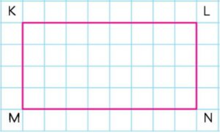

DEĞERLENDİRME SORULARI
1. Yukarıdaki yapı kaç adet birim küpten oluşmuştur?
86
9
7

KN
KL
ML
2. Aşağıdakilerden hangisi yukarıdaki şeklin köşesi değildir?
LMKN
KL
ML
3. Aşağıdaki eşleştirmelerden hangisi doğru değildir?
5200 mm = 520 cm1300 mm = 13 cm
430 mm = 43 cm
246 mm = 24,6 cm
4. 3200 + 100 yandaki işlemi zihinden yaparsak sonuç kaçtır ?
3.6003.500
3.400
3.300
5. 870 - 670 - ? - 270
Yukarıdaki ? yerine aşağıdaki sayılardan hangisi gelmelidir ?
370
470
400
6. Bir satıcı toptancıdan tanesi 40 TL olan tişörtlerden 32 tane almıştır. Buna göre satıcı kaç TL vermiştir
12801180
1100
1150
7. 4560 : 15 = ? Bölme işleminin sonucu aşağıdakilerden hangisidir ?
280296
304
300
8. Bölme işlemi için aşağıdakilerden hangisi yanlıştır ?
Bölünen sayı her zaman en büyük terimdir.Kalansız bir bölmede bölünen sayı, bölen ile bölüm çarpılarak bulunur.
Bölme işlemlerinin sağlaması çarpma işlemleridir.
Bölme işleminde kalan bölen sayıdan büyük olabilir.
9. Soru:
190
xxx
+= 295 / xxx yerine hangisi yazılmadılır? 100
250
105
340
10. 2,857+8,377=? İşleminin sonucu kaçtır?
10,25011,373
10,875
11,234